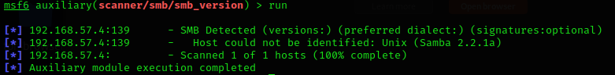

Metasploit:
#msfconsole
#search smb
1st part:type of module:eg:auxillary,exploit,post
2nd part:type of action:eg:fuzzing,dos,gather,scanner
#use moduleName/typeOfAction etc
#info
#options
#set RHOSTS/RHOST ipOfVictiim
RHOSTS:remote host/victim
#run

samba version:2.2.1a
smbclient:attempt to connect to the file share
#smbclient -L \\\\<victimIP>\\ OR
#smbclient -L \\<victimIP>
-L:list all files

ADMIN$ maybe important
#smbclient \\\\192.168.57.4\\ADMIN$
ADMIN$ wont allow annonymous access but IPC$ does
but when we try to ls after #smbclient \\\\192.168.57.4\\IPC$ :we get aaccess denied